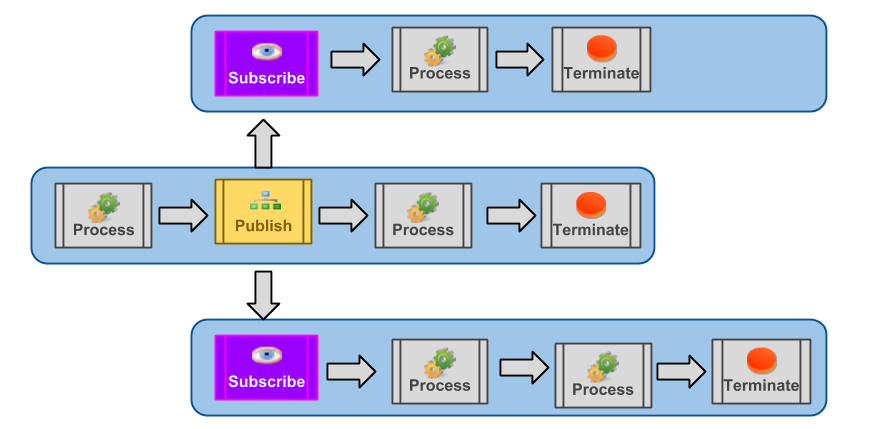

The Publish and Subscribe processes work together to bind two or more sequences. This binding is achieved by specifying a common Event Type that is shared between both the Publish and Subscribe processes.

The Publish process directs the message to the common event type and the
Subscribe process retrieves from the common event type. This indirection facilitates
the retrieval of the same event type by more than one Subscribe process.
A Subscribe process must always be the first process in a Sequence
An event type must be specified for both the Subscribe and Publish processes. An event type is created from the configuration screen of either the Publish or Subscribe processes. To specify the event type:
To publish to an event type, click Configure next to a Publish step in the sequence builder. Select an event type to publish to by clicking the Event Type lookup field.
To subscribe to an event type, click the configure link next to a Subscribe step (if not already on the Subscribe configuration view)
Select a named event to subscribe to by clicking the Event Type lookup field.